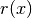
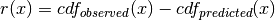

evaluation module¶
This module is used to for evaluating the accuracy of the Agent-Based Model of Human Activity Patterns (ABMHAP) simulation results vs. Consolidated Human Activity Database (CHAD) data.
-
evaluation.compare_abm_to_chad(demo, df_list, trial_code, fidx=100, do_save=False, fpath=None)[source]¶ This function compares the results of the ABMHAP to the CHAD data by showing by
- plotting cumulative distribution functions (CDF) of the predicted (ABMHAP) and observed (CHAD) single-day data for each activity
- plotting the residual (that difference between the CDFs) between the predicted (ABMHAP) and observed (CHAD) data for each activity
Parameters: - demo (int) – the demographic identifier
- df_list (list of pandas.core.frame.DataFrame) – the ABMHAP activity diaries to compare
- trial_code (int) – the trial identifier
- fidx (int) – the figure identifier for the first figure in a series of figures
- do_save (bool) – a flag indicating whether (if True) or not (if False) to save the figures
- fpath (str) – the file path of the figures that are to be saved
Returns:
-
evaluation.compare_abm_to_chad_help(df_abm, df_obs, act_code, fidx, do_save, fpath)[source]¶ This function compares the results of the ABMHAP to the CHAD data for a given activity by
- plotting cumulative distribution functions (CDF) of the predicted (ABMHAP) and observed (CHAD) single-day data for each activity
- plotting the residual (that difference between the CDFs) between the predicted (ABMHAP) and observed (CHAD) data for each activity
Parameters: - df_abm (pandas.core.frame.DataFrame) – the predicted (ABMHAP) data for the respective activity
- df_obs (pandas.core.frame.DataFrame) – the single-day observed (CHAD) data for the respective activity
- act_code (float) – the activity code
- fidx (int) – the figure identifier of the first figure
- do_save (bool) – a flag indicating whether (if True) or not (if False) to save the figures
- fpath (str) – the file path of the figures that are to be saved
Returns: the last figure identifier plotted
Return type: int
-
evaluation.get_solo_data(z, fname)[source]¶ This function gets the single-day data from individuals with only single-day records within CHAD.
Parameters: - z (zipfile) – the zipfile of the demographic data
- fname (str) – the file name for the CHAD individual records data
Returns: the CHAD single-day data
Return type: pandas.core.frame.DataFrame
-
evaluation.plot(x, q, cdf, inv_cdf, act_code, fids, do_hours=True, dname=None)[source]¶ This function plots the following results of cumulative distribution function (CDF):
- CDFs comparing the predicted and observed values
- CDFs showing the residual
- CDFs showing the scaled residual
- Inverted CDFs comparing the predicted and observed values
- Inverted CDFs showing the residual
- Inverted CDFs showing the scaled residual
Parameters: - x (numpy.ndarray) – the range of values of the data
- q (numpy.ndarray) – the qunatiles
- cdf (numpy.ndarray) – the cumulative distribution function in units of percentage
- inv_cdf (numpy.ndarray) – the cumulative distribution function in units of time
- act_code (numpy.ndarray) – the activity codes of the respective activities
- fids (numpy.ndarray) – the figure identifiers
- do_hours (bool) – a flag indicating whether to plot the inverted CDF data in hours (if True) or minutes (if false)
- dname (str) – the name of the data to be plotted
- off (float) – the percentage in which to put a vertical line indicating both the bottom and top off-percentage of the data
Returns: a figure containing CDFs comparing the predicted and observed values, a figure containing CDFs showing the residual, a figure containing CDFs showing the scaled residual, a figure containing Inverted CDFs comparing the predicted and observed values, a figure containing Inverted CDFs showing the residual, a figure containing Inverted CDFs showing the scaled residual
Return type: matplotlib.figure.Figure, matplotlib.figure.Figure, matplotlib.figure.Figure matplotlib.figure.Figure, matplotlib.figure.Figure, matplotlib.figure.Figure
-
evaluation.plot_predicted_observed(x, pred, obs, xlabel, ylabel, title)[source]¶ Plot the predicted (ABMHAP) and observed (CHAD) data.
Parameters: - x (numpy.ndarray) – the x-axis
- pred (numpy.ndarray) – the predicted (ABMHAP) values
- obs (numpy.ndarray) – the observed (CHAD) values from data
- xlabel (str) – the x-axis label
- ylabel (str) – the y-axis label
- title (str) – the title of the figure
Returns:
-
evaluation.plot_residual(x, res, xlabel='', ylabel='', title='', color='r', label='Residual')[source]¶ This function plots the residual between cumulative distribution functions (CDFs) the ABMHAP and CHAD data.
Parameters: - x (numpy.ndarray) – the x-axis data
- res (numpy.ndarray) – the residual 
- xlabel (str) – the x-axis label
- ylabel (str) – the y-axis label
- title (str) – the title of the plot
- color (str) – the color of the plot
- label (str) – the label of the plot
Returns:
-
evaluation.residual(pred, obs, x)[source]¶ This function analyzes the residual between predicted values and observed values. Given the predicted and observed values, this function does the following:
Compute the empirical cumulative distribution function (CDF) between the predicted and observed data in units [quantile vs hours]
Compute the residual in the CDF between observed and predicted data

Invert the residual so that the CDFs and residuals are in units [minutes vs quantile]
Parameters: - pred (numpy.ndarray) – the predicted (ABMHAP) values used to make the empirical CDF
- obs (numpy.ndarray) – the observed (CHAD) values used to make the empirical CDF
- x (numpy.ndarray) – the x-values
- do_scaling (bool) – this scales the inverted cdf residual by the standard deviation of the observed values
Returns: the data for the cumulative distribution data (predicted, observed, residual, and scaled residual), the data for the inverted cumulative distribution data (predicted, observed, residual, and scaled residual)
Return type: pandas.core.frame.DataFrame, pandas.core.frame.DataFrame
-
evaluation.residual_analysis(pred, obs, N=1001, do_periodic=False)[source]¶ This function takes the predicted and observed values and computes the respective cumulative distribution functions (CDFs) in units percentage and the inverted CDF which is the CDF in units of minutes.
Parameters: - pred (numpy.ndarray) – the predicted values
- obs (numpy.ndarray) – the observed values
- N (int) – the number of points of the CDF vector
- do_periodic (bool) – a flag to see if the time data should be in a [-12, 12) hour format
Returns: the x values, CDF of residual, inverted CDF of residual
Return type: numpy.ndarray, pandas.core.frame.DataFrame, pandas.core.frame.DataFrame
-
evaluation.sample_activitiy_abm_work(df)[source]¶ This function is used in order to sample a random day of work activity data from the ABM. This function takes takes into account that 1 work “event” consists of multiple work activity-diary entries.
Note
This function assumes that df only contains work activity data and is NOT empty
Note
The duration data here is the end of the last event - minus the start of the first event. This is done to mimic how the duration data is stored in CHAD.
Parameters: df (pandas.core.frame.DataFrame) – the diary of work activities for an individual :return:the sampled work data :rtype: pandas.core.frame.DataFrame
-
evaluation.sample_activity_abm(df_list, act)[source]¶ Given an activity type, this function looks at each activity diary and samples 1 event of that activity type should that diary have a matching activity-entry.
Note
Because the work activity technically occurs twice (1 event before lunch and 1 event after lunch), the activity needs to be merged as one event in order for the analysis to be correct.
Parameters: - df_list (list of pandas.core.frame.DataFrame) – the activity diaries
- act (float) – the activity code
Returns: the sampled activities
Return type: pandas.core.frame.DataFrame
-
evaluation.save_figs_dt(figs, fpath)[source]¶ This function save plots about the activity duration.
Parameters: - figs (tuple) – a tuple of figures to save about activity duration data
- fpath (str) – the specific file path in which to plot the data
Returns:
-
evaluation.save_figs_end(figs, fpath)[source]¶ This function save plots about the activity end time.
Parameters: - figs (tuple) – a tuple of figures to save about activity end time data
- fpath (str) – the specific file path in which to plot the data
Returns:
-
evaluation.save_figs_start(figs, fpath)[source]¶ This function save plots about the activity start time.
Parameters: - figs (tuple) – a tuple of figures to save about activity start time data
- fpath (str) – the specific file path in which to plot the data
Returns:
-
evaluation.save_figures(act, figs_start, figs_end, figs_dt, fpath)[source]¶ This function saves the plotted figures about duration and start time data of the results from
compare_abm_to_chad().Parameters: - act (int) – the activity code
- figs_start (tuple) – a tuple of figures to save about activity start time data about the random day sampling
- figs_end (tuple) – a tuple of figures to save about activity end time data about the random day sampling
- figs_dt (tuple) – a tuple of figures to save about activity duration data about the random day sampling
- fpath (str) – the general file path to plot the data
Returns: